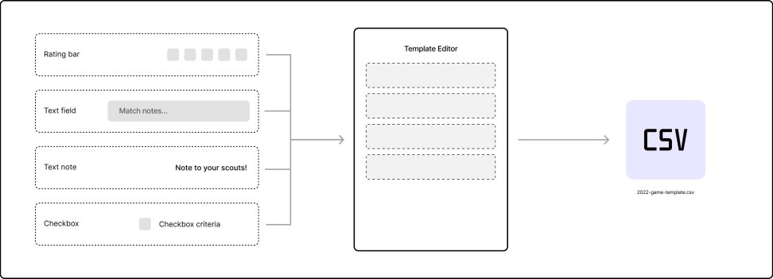
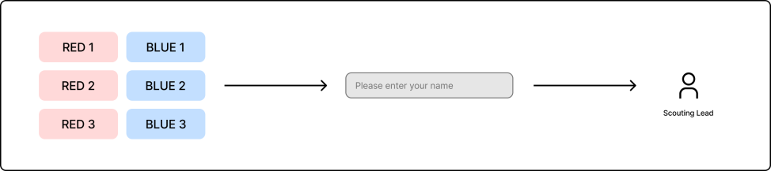
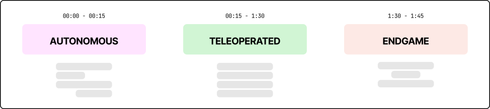

Scouting App
Android (tablet) application
February 2022 - April 2023
Background & purpose
Scouting at FRC (FIRST Robotics Competition) events is an essential part of a team’s success, informing them about the performance of other teams, the specifics of everyone’s competition robot, and giving a higher chance of winning the event by making it to the final rounds. The main structure of these competitions is as follows: all teams participate in qualification matches, where each match consists of 3 teams (one randomly selected “alliance”) vs 3 teams. If one alliance wins, all teams in it go up in rank, and vice versa. After qualification rounds, the final matches are played in fixed alliances that do not change for the rest of the event, and are selected by the highest ranked teams. This is where scouting becomes crucial because, if your team has the opportunity to select alliance partners, then you’ll want the data on how each team has performed during other matches to gauge how good of a fit they will be and how they can contribute to the alliance’s success.
Benefits of digital scouting
Teams will often use a variety of strategies at competitions to keep track of this scouting data, which is collected from team members observing the matches in the audience. In our team, the method used involved team members writing notes about each match on a dry-erase board, which would then be frantically entered into an Excel spreadsheet in between each match and then late compiled and analyzed. This app serves as a revamp to that system, allowing all scouting to be digital, collected on tablets and automatically saved in spreadsheet format. This dramatically reduced stress in between matches, allowed us to better quantify other team’s performance with more numerical data, and allows for future-proofing with a template design system.
Ease of use & templates
In FRC, the game that teams will compete in changes each year under a different theme, bringing changes in how teams can score points and move around the field. This requires that the types of data collected when scouting must change each year as well, to be able to fully account for a team’s performance. I designed this application to use a template system, which allows dragging and dropping different premade, editable components into a form, which can be exported and reused on any device. This allows for future-proofing, because creating templates each year can use this same system, and users who create these templates do not need to have any app development or technical knowledge to use it.
Data organization
Teams will often use a variety of strategies at competitions to keep track of this scouting data, which is collected from team members observing the matches in the audience. In our team, the method used involved team members writing notes about each match on a dry-erase board, which would then be frantically entered into an Excel spreadsheet in between each match and then late compiled and analyzed. This app serves as a revamp to that system, allowing all scouting to be digital, collected on tablets and automatically saved in spreadsheet format. This dramatically reduced stress in between matches, allowed us to better quantify other team’s performance with more numerical data, and allows for future-proofing with a template design system.
Scouting system
The full system requires only 6 additional “scouts” or people to collect data in the stands at competition, where each person monitors one team on each alliance (red/blue). The data that is saved is tagged with the user’s name, so that if there are any outliers or additional questions, the scouting lead can easily follow up to manually correct any issues. Many teams also set requirements for how much each person should contribute to scouting, so providing names allows scouting leads to manage who is scouting at any given time and check to see who has met these requirements.
Other scouting features
During matches, there are three phases (autonomous, teleoperated, endgame) which each come with different robot movement requirements and ways to earn points. In this scouting app, users can create different scouting forms for each phase of the game, which allows for more precise analysis of team performance and identification of strengths/weaknesses of each robot. Furthermore, there is another mode included which prompts users to visit each team’s pit to perform pit scouting, where a mini-interview is conducted with someone from that team to learn more about the specific hardware, software and strategy of the robot. This also supports preset scheduling and creation of templates.
Takeaways
Designing and implementing this product was a good experience in expanding my mobile development skills to include a new form factor (tablet), working with file I/O and multi-device system design, and also designing for future use with the template system. This was also a great experience in user research, which I performed while we made the switch from a paper scouting system to a digital one to learn about pain points and opportunities when implementing this app.